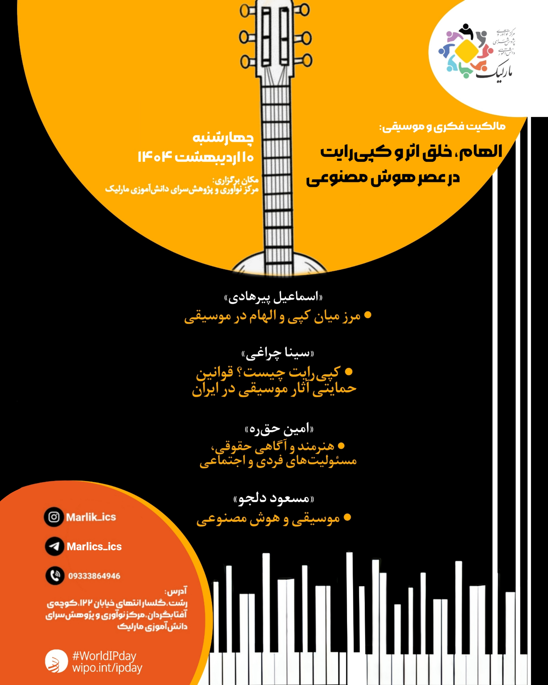

برای شرکت در این رویداد فرم زیر را تکمیل کنید
In this event, held in line with World Intellectual Property Day, which this year is themed "IP and Music: Feel the beat of IP", we have gathered some of the best musicians and music industry professionals to discuss various aspects of the creative process and the legal considerations involved in creating a piece of music. Esmail Pirhadi, Setar player, singer, and PhD student in Ethnomusicology at the University of Hildesheim, will talk about the differences between inspiration and copying. Sina Charaghi, programmer, researcher, and music producer, will define copyright and the legal frameworks protecting musical works in Iran. Amin Haghrah, legal advisor, researcher, and writer, will speak about the legal awareness and legal responsibility of musicians. Masoud Deljoo, musician, producer, and lead singer of the band Moonhead, will talk about creating music in the age of artificial intelligence. The event will be held onsite, with online participation also available. This event has been approved by the United Nations Intellectual Property section and is included in the official calendar of Intellectual Property Day events.
برای شرکت در این رویداد فرم زیر را تکمیل کنید